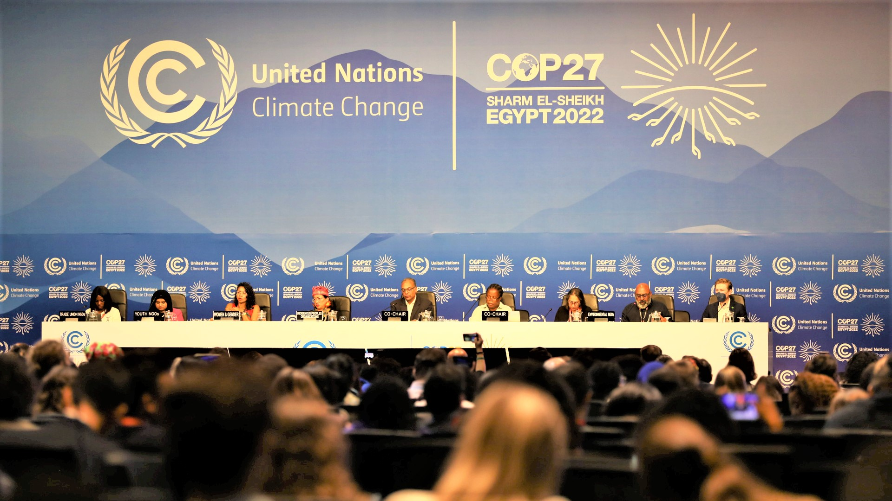

COP27 Agreement on Food

COP27 is finally over. In late-night negotiations that ended in the early hours of Sunday, November 20, parties successfully reached a deal to establish a long-awaited and much-discussed mechanism for loss and damage finance. The agreement, which came after years of concerted effort on the part of civil society and developing countries, was “a real pinch-me moment,” according to Teresa Anderson of ActionAid. But this high-profile outcome was but one of the many decisions taken at COP27.
The conference’s agreement on food also represents an important step forward, although it includes some key weaknesses. As we reported in the days before COP27, the future of the UNFCCC’s only dedicated work stream on food, the Koronivia Joint Work on Agriculture, was set to be decided as delegates met in Sharm el-Sheikh. This was an incredibly important, although under-discussed, item on the agenda. Food systems are highly vulnerable to the effects of climate change, and climate action must be designed in a way that supports the resilience of small-scale producers in frontline communities around the world. Without a strong emphasis on food that is centered on principles of justice and equity, national climate change policies will fail. This is especially true in Africa, where approximately 70% of the population relies on agricultural livelihoods. This is why food security is emphasized in the UNFCCC, the Paris Agreement, and even the brand-new Sharm el-Sheikh Implementation Plan. Food systems transformation is an indispensable component of climate action.
Here are the key outcomes for food systems from COP27:
An expanded mandate for food security
As the Koronivia Joint Work on Agriculture is replaced by the Sharm el-Sheikh Joint Work on Implementation of Climate Action on Agriculture and Food Security, negotiators have taken an important step to expand the UNFCCC’s mandate to address food systems in a more holistic and integrated manner. Where the previous work program had a narrow focus on agricultural production, its successor will promote “a holistic approach to addressing issues related to agriculture and food security.” While negotiators did not agree to include a food systems mandate in the text, this still represents a substantial step forward.
There are two definitions of food security that carry legal weight in the international system, and both would introduce important elements into the Sharm el-Sheikh joint work that were not included in Koronivia. Member states of the Food and Agriculture Organization of the United Nations (FAO) have agreed that food security has four pillars: physical availability, physical and economic access, utilization through an adequate diet and the meeting of all physiological needs, and stability of prices and supplies over short and long timescales. Another highly influential definition from the High-Level Panel of Experts (HLPE) of the Committee on World Food Security (CFS) adds the pillars of sustainability and agency to the FAO’s original four, thus mainstreaming concerns for human rights, democratic governance, and ecological integrity. By defining a “holistic…food security” mandate, the Sharm el-Sheikh joint work is already signaling that it intends to leave behind Koronivia’s outdated focus on production.
Concrete steps toward implementation
Not only does the Sharm el-Sheikh joint work include ‘implementation’ in its name, it has also taken concrete steps in the right direction. The agreement includes a strong focus on the importance of small-scale food producers, describing them as “stewards of the land” and highlighting their importance as “key agents of change.” It also highlights the vulnerability and importance of indigenous and local communities, women, and youth in adapting to the effects of climate change, and calls for their participation and inclusion in policy formulation.
Crucially, the Sharm el-Sheikh work program’s mandate also includes cooperating with “the operating entities of the Financial Mechanism, the Adaptation Fund, the Least Developed Countries Fund, and the Special Climate Change Fund,” which establishes an avenue to provide more and better targeted resources in support of small-scale food producers. This should mean that existing climate finance has a clearer path to reach those who most need it. There is also space in the mandate to cooperate with other UN bodies, like the CFS, which provides important policy guidelines through a transparent process that is inclusive of civil society and indigenous and local communities. An explicit linkage with the CFS would consolidate this progress and provide the work program with increased legitimacy in global food systems governance.
Filling in Koronivia’s blue blind spot?
Despite no mention of fisheries or aquaculture in any formal document produced by Koronivia, the importance of aquatic food systems is gaining increased attention at the UNFCCC. At COP27, interventions from the Climate Action Network on behalf of environmental NGOs and South Sudan on behalf of the Least Developed Countries featured calls for the consideration of fisherfolk alongside other types of food producers in the successor to Koronivia. Considering that aquatic animal-source foods account for 17% of global protein consumption, no food systems policy can be complete without them. COP27’s call for a holistic approach to food security should be interpreted to include aquatic food systems.
A second stream of work under the UNFCCC provides additional support for the inclusion of aquatic food systems after Sharm el-Sheikh. In 2021, the Glasgow Climate Pact invited all of the UNFCCC’s work programs to “consider how to integrate and strengthen ocean-based action in their existing mandates and work plans.” The Sharm el-Sheikh Implementation Plan renewed that call, encouraged Parties to include ocean action in their national frameworks, and made a provision for continued ocean dialogues to provide input into other UNFCCC processes. It also recalled the outcomes of the 2022 ocean dialogue, held in Bonn on June 15, which emphasized the importance of improved fisheries management, ecosystem conservation and restoration, and other forms of climate action in aquatic food systems as key pathways for achieving climate change adaptation, food security, and sustainable development.
Moving forward
The Sharm el-Sheikh Joint Work on Implementation of Climate Action on Agriculture and Food Security has much to achieve in the next four years. If Parties take their work seriously, they could make a big difference for small-scale food producers, including pastoralists, farmers, and fishers, as they confront the effects of climate change in their local contexts. The new joint work should include:
a holistic, food systems approach,
transparent and participatory governance,
targeted channeling of climate finance,
explicit linkage with the CFS,
and the inclusion of aquatic food systems in future deliberations.
It should also include agroecology and food sovereignty as cornerstones of climate action. As the UNFCCC continues its deliberations on food, climate justice is at stake in Africa and around the world.
Photo: UNFCCC COP27 17 Nov 22 Peoples Plenary/KiaraWorth
This post was originally shared on the JENA blog.